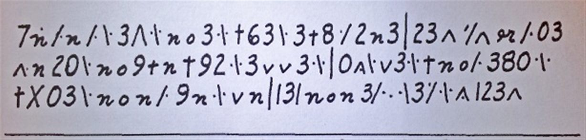

Not solved — and not a simple substitution of any language tested closed from the scan
Both transcriptions in circulation were attacked with a 5-gram annealer in ten languages. The best any language reached was −2.69 nats per letter, and 300 restarts did not move it. The same solver recovers twelve of fifteen random 103-letter passages enciphered the same way, and genuine text of this length scores between −1.4 and −2.1. Either the slip is not a simple substitution of a text in these languages, or both readings share a transcription error.
01 The object and its history
The slip carries three short lines. It was found, probably in the late 1950s, behind an 1835 portrait of a Danish general in a Copenhagen military museum, and sent to the American Cryptogram Association. The ACA never solved it and never wrote it up. The museum, the general and the finder are all unrecorded.
Klaus Schmeh received a scan from ACA member Kent Ramliden, a Swede living in Florida who died in 2016. He published it three times: in German in January 2015, as no. 23 of his Top 50 unsolved messages in August 2017, and as German and English “cold case” posts in October 2021. The only image in circulation is that scan, 614 by 147 pixels. Two reader contributions from the 2021 comments matter here: a 25-symbol transcription by “ShadowWolf”, and a Danish quadgram hill-climb by Matthew Brown that found nothing.
02 The transcription
Two readings were used. cipher.txt is this project’s, made from the scan upscaled four and six times, half a line at a time. cipher_sw.txt is ShadowWolf’s 25-symbol reading from the comments of the German post of 7 October 2021. This is the merged reading, one token per symbol, space separated:
7 N F n F B 3 A D B n o 3 D B P 6 3 B 3 P 8 D F 2 n 3 | 2 3 A W R F 0 3 A n 2 0 B n o 9 P n P 9 2 B 3 v v 3 D B | 0 A B v 3 D B P n o F 3 8 0 D B P X 0 3 B n o n F 9 n D B v n | 1 3 | n o n 3 F D B 3 F B A 1 2 3 A
That is 107 tokens: 103 symbols of 20 kinds, plus 4 long vertical strokes written | and treated as sentence dividers. Digits 4 and 5 never occur.
| token | mark on the slip | count |
|---|---|---|
3 | digit 3 | 16 |
n | plain n | 13 |
B | backslash with its trailing dot (\.) | 14 |
F | slash with its trailing dot (/.) | 8 |
P | plus sign | 6 |
A | caret or lambda (^) | 6 |
D | free-standing dot that precedes a stroke | 8 |
o | small round letter o | 5 |
2 | digit 2 | 5 |
0 | tall zero | 5 |
v | as written | 4 |
9 | digit 9 | 3 |
1 | digit 1 | 2 |
8 | digit 8 | 2 |
7 6 X | as written | 1 each |
N | n with two dots above | 1 |
R | small “or”-like glyph at the end of line 1 | 1 |
W | caret with a double accent above | 1 |
| | long vertical stroke, sentence divider, not counted among the 103 | 4 |
Where the two readings differ
The two readings agree symbol for symbol except that ShadowWolf splits what is merged here. He separates the backslash with a dot after it from the backslash with dots on both sides, which here is a free dot D followed by B. He separates the slash with a trailing dot from the slash with a leading dot, here D followed by F. He gives the small raised double tick after the first caret pair its own symbol. He distinguishes four caret shapes: a tall lambda-like one, which is the first caret of line 1 and the last symbol of line 3; a small one; one with a trailing dot opening line 2; and one after the zero in line 2. And he reads the second tall stroke around 1 3 in line 3 as the digit 1 rather than a divider. With those splits the symbol count is 25, which is Schmeh’s figure; merged it is 20. Both readings were attacked.
Two internal regularities
The letter o occurs five times and every time directly after n: no3, no9, +no, non and non3, with non twice in line 3. The doubled pair vv occurs once, in line 2. Section 06 shows how far they go.
03 The attack
solve.py builds character 5-gram language models from Project Gutenberg texts in ten languages: Danish, Swedish, Norwegian, German, Dutch, French, English, Latin, Icelandic and Finnish, 0.6 to 2.4 million letters each. The corpus is not in the repository; it is fetched through the Gutendex API with the ids in the session log. The solver is simulated annealing over an injective symbol-to-letter map, 60 to 80 restarts per run, with the long strokes treated as sentence boundaries. The annealer optimises the 5-gram score alone; its top candidates are then re-ranked by dictionary coverage, which it does not optimise.
Six token conventions were tested on the merged reading: the free dot as a letter, dropped, as a boundary, or fused to the following stroke; the long stroke as a letter; and the dotted n merged with plain n. The 25-symbol reading was run as it stands. A separate script, solve_sp.py, tests the hypothesis that the two dotted strokes are word separators, which would make the text 22 words averaging 3.7 letters, using a space-aware model and scoring whole-word hits.
Nothing readable came out in any language under any convention. Best per-letter scores, with what the best key produced:
| language | best score per letter, any convention | what it looked like |
|---|---|---|
| Latin | −2.69 | fxsisted tine togeteom scie ... |
| Danish | −2.77 | junindel dige dskedesf ... / ... udstødes ... velsigne ... |
| Norwegian | −2.81 | bærersag sena stjasatm ... |
| Swedish | −2.81 | honensam sera stfasatv ... |
| English | −2.88 | cydidsea sine stbesetf ... |
| German | −2.93 | uchthien itze irbeierm ... |
| French | −2.97 | chiailes lape ltbeletr ... |
| Dutch, Icelandic, Finnish | −3.07 to −3.30 |
The word-separator hypothesis scores −4.6 per letter under the spaced model, where real text scores about −2.3. It yields only isolated Danish words: er, elle, unge, død, døde. The last two are the fragment discussed in section 06.
04 The matched controls
A failed search proves nothing on its own, so the solver was calibrated on texts it should solve. control.py draws passages of 103 letters with three sentence breaks at random from the same corpora, enciphers each with a random simple substitution of about 20 symbols, and attacks it with the identical solver. Three trials per language, 40 restarts each; the real cryptogram got 60 to 80, then 300. Accuracy is the share of the passage recovered.
| language | trial | letters in key | accuracy | score found | score of true text | outcome |
|---|---|---|---|---|---|---|
| Danish | 1 | 19 | 0.99 | −1.99 | −1.85 | recovered |
| Danish | 2 | 19 | 0.99 | −1.93 | −1.96 | recovered |
| Danish | 3 | 18 | 0.99 | −1.85 | −1.76 | recovered |
| German | 1 | 22 | 0.96 | −1.88 | −1.78 | recovered |
| German | 2 | 19 | 0.79 | −2.64 | −1.75 | partial |
| German | 3 | 22 | 0.14 | −3.42 | −1.81 | search failed |
| English | 1 | 20 | 1.00 | −1.44 | −1.44 | recovered |
| English | 2 | 21 | 0.99 | −1.99 | −1.85 | recovered |
| English | 3 | 20 | 1.00 | −1.67 | −1.67 | recovered |
| Latin | 1 | 18 | 1.00 | −2.09 | −2.09 | recovered |
| Latin | 2 | 18 | 1.00 | −1.74 | −1.74 | recovered |
| Latin | 3 | 19 | 0.99 | −1.87 | −1.72 | recovered |
| Swedish | 1 | 22 | 1.00 | −1.95 | −1.95 | recovered |
| Swedish | 2 | 22 | 0.05 | −3.49 | −1.59 | search failed |
| Swedish | 3 | 22 | 1.00 | −1.99 | −1.99 | recovered |
Twelve of fifteen passages are recovered essentially completely, and the true text always scores between −1.4 and −2.1 per letter. Two trials fail outright and one partly. In each case the true key would have scored far better than what the annealer found: −1.81 against −3.42, −1.59 against −3.49, −1.75 against −2.64. These are search failures at 40 restarts, most likely tied to 22-letter keys, and they mean that a single failed run on the real text would prove nothing. That is why the strongest candidate languages were rerun with 300 restarts on both readings.
Against that calibration the cryptogram never scores better than −2.7 in any language or under any reading. So either it is not a simple substitution of a text in these ten languages, or the transcription conflates or splits letters in a way that both independent readings share. Danish, the default assumption since 2015, fits no better than Latin or Norwegian. Matthew Brown’s Danish quadgram hill-climb in the 2021 comments came to the same nothing.
05 The 300-restart confirmation
Best per-letter score with 300 restarts from seed 5, for the merged reading in the full and nodot conventions and for the 25-symbol reading. The dotattach runs were still going when the notes were written and had not beaten these.
| language | merged, full | merged, no dot | 25-symbol reading |
|---|---|---|---|
| Latin | −2.90 | −2.82 | −3.16 |
| Danish | −3.04 | −2.90 | −3.16 |
| Swedish | −3.17 | −2.99 | −3.20 |
| Norwegian | −3.12 | −3.01 | −3.17 |
| English | −3.20 | −3.13 | −3.28 |
| German | −3.29 | −3.32 | −3.46 |
Five times the restarts move nothing; section 03 took the best of six conventions, these runs fix the convention and the seed, and no cell improves on it. The ceiling is the same, 0.7 to 1.4 nats per letter below what genuine text of this length scores in every one of these languages. Search failure is excluded as the explanation.
06 The one suggestive fragment
non reads as død
Under n = d, o = ø, 3 = e, the n-o-n pattern gives Danish død (dead, death), non3 gives døde (died, the dead), and no3 gives døe, the pre-1900 spelling of dø (to die). It is the one suggestive fragment in the whole search.
It surfaced in the word-separator run, whose only other whole-word hits were er, elle and unge. The three symbols involved account for 34 of the 103 tokens, so this assignment fixes a third of the text. It does not extend. The rest of that reading is noise, and the run as a whole scores −4.6 per letter where real text under the same model scores about −2.3.
07 Status and what would reopen it
not solved Closed from the scan that exists. Three routes would reopen it.
- The original slip or a better scan. The ACA received the slip from the museum, so the ACA archive or Kent Ramliden’s papers are the places to ask. A second image would settle the split-versus-merged question in section 02.
- The painting. An 1835 portrait of a Danish general in a Copenhagen military museum points to the Tøjhusmuseet, now the Danish War Museum. Identifying the general would give a name, a date and a language.
- Shorthand or a private code. If the strokes and dots are a shorthand or a private code rather than letters, no substitution model applies, and nothing here tests that possibility.
08 Files
Everything is in copenhagen/ in the project repository. cipher.txt is the merged 20-symbol reading with its token conventions in the header; cipher_sw.txt is ShadowWolf’s 25-symbol reading aligned to it. solve.py is the 5-gram annealer with dictionary re-ranking, solve_sp.py the word-separator test, control.py the matched-control harness. NOTES.md holds the full record of the attempt. The Gutenberg corpus is not in the repository; the Gutendex ids are in the session log.